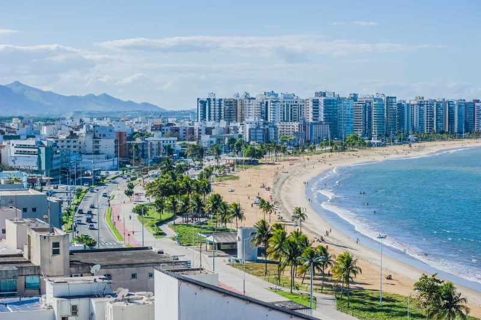
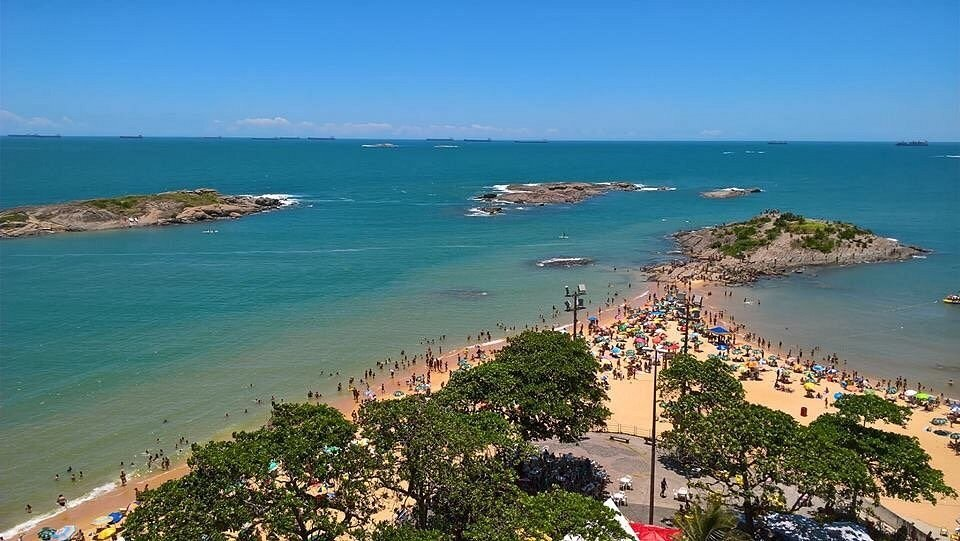
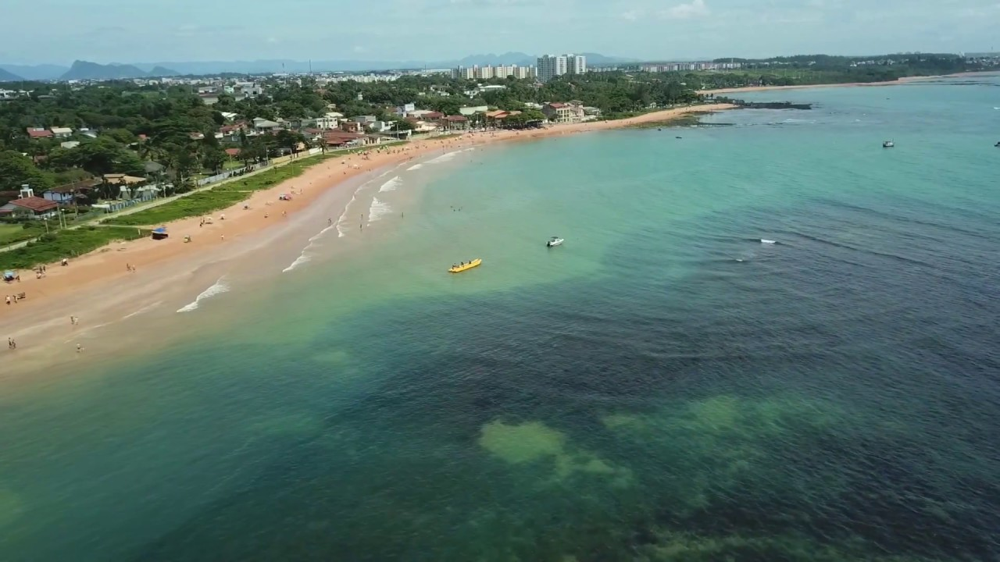
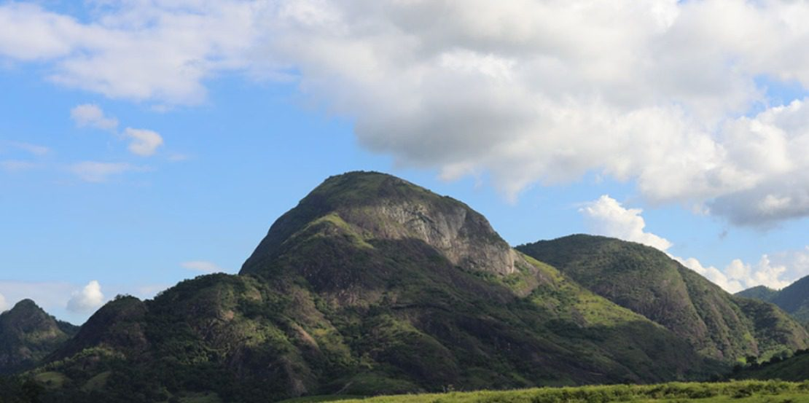

Pontos turísticos da Grande Vitória
A Grande Vitória representa a região metropolitana do Espírito Santo, e é constituída de de 5 municípios: Vitória, Vila Velha, Serra e Cariacíca.
Estes são os 5 pontos turísticos de cada cidade:

Praia de Camburi.

Praia da Costa.

Praia de Manguinhos.

Pico do Moxuara.